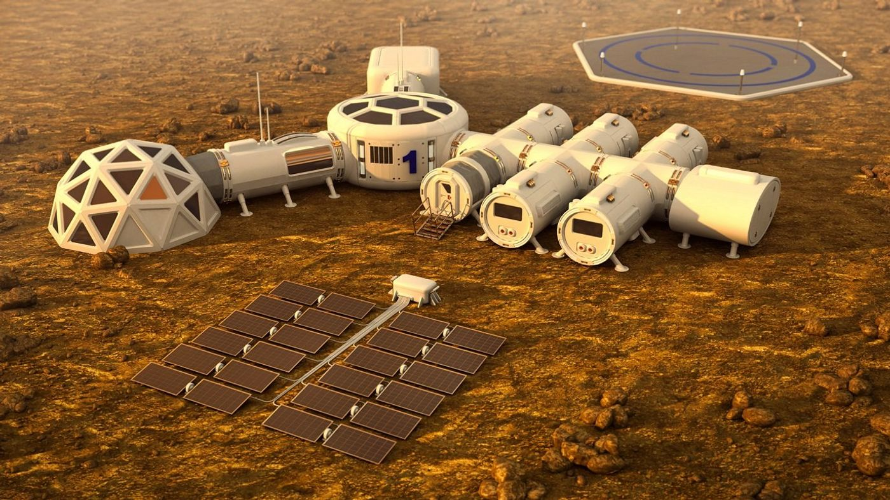
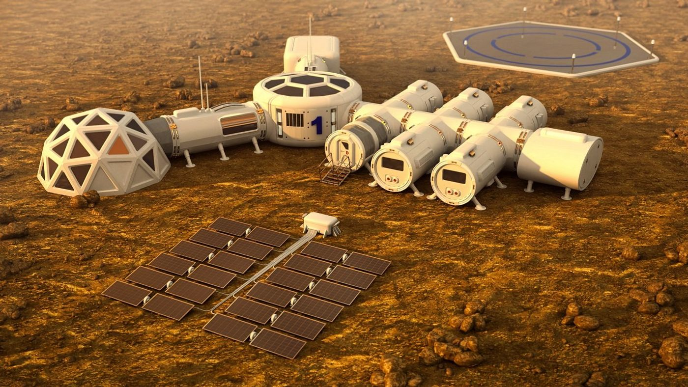
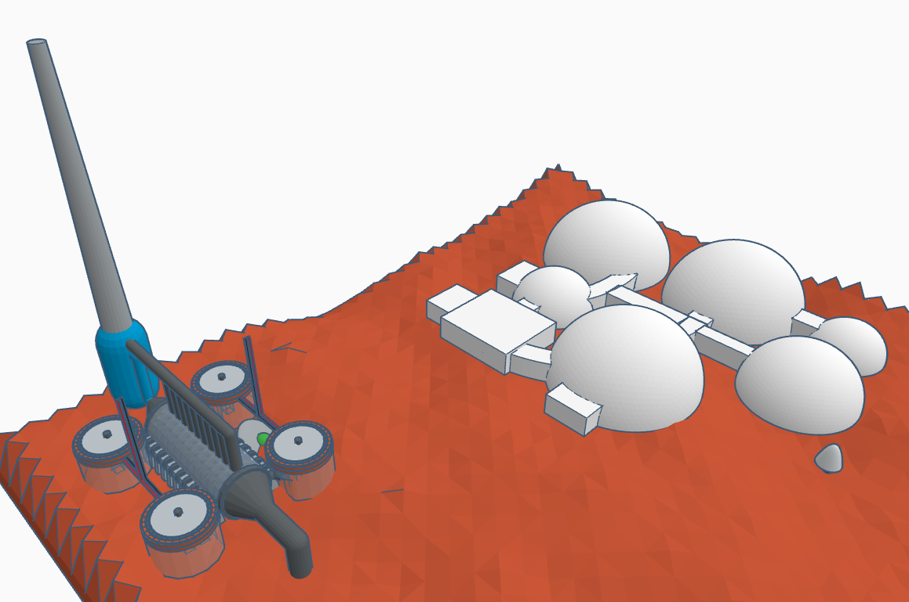

Earth
Our Home.
Our Goals

 

Micro-reactors represent a cutting-edge, low-emission technology adaptable for off-Earth use. Ensures long-term power supply, without constant resupply
Powering a Mars colony sustainably is key to creating a viable human settlement. Nuclear energy supports infrastructure, agriculture, life support and industries to further develop our colony sustainably.
Current rockets can deliver approximately 50-100 tonnes, in consideration to crew manning the ship. Mars missions must reduce payload mass significantly due to energy demands of interplanetary travel.
Ideally, colonies will be delivered in modular pods. Requires innovative architecture and efficient energy systems to optimize mass vs. utility.
NASA and commercial partners are actively planning crewed missions to Mars.
Energy requirements: Modeled on the ISS - up to 90 kWh/day per unit Colony energy use estimated based on population and operations Note we did consider the use of the nuclear battery from the mars rover - the NASA-developed MMRTG (multi-mission radioisotope thermoelectric generator). However, the battery would only produce approximately
Chosen reactor: MHI IMR Microreactor Compact design: 3m x 4m, < 40 tons - Mars transport feasible Energy Produced: between 1-50MWe Solid-State Core: no liquid coolant, reduced risk, higher reliability Passive cooling/shutdown: eliminates dependency on external systems: considering an average temperature of -65 degrees celsius on Mars, cooling almost becomes a non-issue Fuel Efficiency: 25-year fuel life with highly enriched uranium; no refueling needed
Location: Elysium Planitia, within the Cerberus Fossae fissure system (approx. 50,000 years old). Heat Source: Volcanic activity from mantle upwellings provides geothermal energy. Water Supply: Sourced from polar ice caps and transported to the plant. Construction Materials: Mined locally—iron, magnesium, aluminum, calcium, and potassium.
Follow me on linkedin: Lee Galbraith
s/o to myself for the entire code and everyone else for "research"